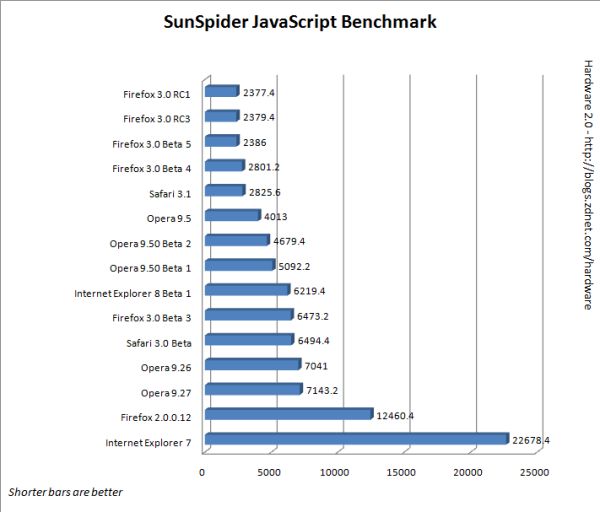

News Bytes
By Deividson Luiz Okopnik and Howard Dyckoff

|
Contents: |
Please submit your News Bytes items in plain text; other formats may be rejected without reading. [You have been warned!] A one- or two-paragraph summary plus a URL has a much higher chance of being published than an entire press release. Submit items to bytes@linuxgazette.net.
News in General
 Nokia on Open Cell Phone Systems
Nokia on Open Cell Phone Systems
After acquiring full ownership of Symbian, an operating system for cell phones, Nokia changed the product to a royalty-free model, following the market trend away from closed systems, contributing the operating system to Symbian Foundation, a newly-created open source Community.
Several cell phone providers, including AT&T, Sony Erickson, LG Electronics, Motorola and Samsung Electronics have already shown interest in the single platform, signing up to form the Symbian Foundation.
More information about Symbian OS can be found here: http://www.symbian.com/
and on the
Symbian Foundation Web page: http://www.symbianfoundation.org/ .
HP Open-sources AdvFS
HP announced on June 23 that it is releasing the Tru64 Unix Advanced File System source code free to the Linux community, providing a reference implementation for an enterprise Linux file system.
More information about the AdvFS can be found at HP's page, at http://h30097.www3.hp.com/unix/advfs.html.
Kernel Developers Sign up a Letter Against Closed-Source Drivers
Several of the Linux Kernel Developers signed a letter directed to hardware vendors, showing several disadvantages of closed-source drivers to the Linux Community. The letter says, among other things, "We have repeatedly found them [closed source drivers] to be detrimental to Linux users, businesses, and the greater Linux ecosystem. Such modules negate the openness, stability, flexibility, and maintainability of the Linux development model and shut their users off from the expertise of the Linux community." It was signed by 170 kernel developers.
You can find the full text here: https://www.linuxfoundation.org/en/Kernel_Driver_Statement.
Openmoko's Linux-based
cell phone started shipping
Openmoko's Neo Freerunner is an open hardware design cell phone that runs a Linux-based operating system, which users are free to modify (and encouraged to do so!). This is the first official release of OpenMoko to the market, as the phone was mostly sold to mobile phone software developers before. The hardware consists of a 500MHz Samsung processor, 128MB of RAM, 256MB of flash memory, and a 4.3-inch 640x480 VGA touch screen LCD. It runs on the open source mobile phone software stack, maintained by the OpenMoko project, along with the open source Jalimo Java Virtual Machine.
More information about the cell phone can be found here: http://wiki.openmoko.org/wiki/Neo_FreeRunner.
LinuxWorld Partners on Global Installfest for Schools
IDG World Expo announced it will partner with Untangle, a pioneer in open source network gateway platforms, to host an Installfest for Schools at this year's LinuxWorld Conference & Expo. Installfest is an event that drives the refurbishment of older, discarded computers, with Free and Open Source Software (FOSS) and then donates the restored computers to schools in need. LinuxWorld is scheduled to take place August 4-7, 2008, at San Francisco's Moscone Center.
Building on the success of the first Installfest for Schools, which refurbished 350 computers with Ubuntu 7.10 for schools in March of 2008, the LinuxWorld event will have local and global components. LinuxWorld attendees will be able to participate by hacking older hardware and installing the operating systems at work stations set up on the show floor. In addition, LinuxWorld will host a collection site by the Alameda County Computer Resource Center (ACCRC) to collect old computers donated by LinuxWorld attendees. The Installfest will go global by posting the scripts, ISO images, tips, and collateral online for Linux users groups (LUGs) to host Installfest for Schools in their own neighborhoods. Volunteers in Bellingham WA, and Portland OR, have already signed up to organize Installfests for Schools in their neighborhoods.
"Installfest is a tremendous effort that brings the Linux community together for a great cause, by providing computers to underprivileged schools, and promoting the use of open source software to new users," said Melinda Kendall, Vice President and General Manager of LinuxWorld Conference & Expo. "Installfest also keeps tons of toxic electronic waste from entering our landfills so it's a win-win situation for the event, the community, the schools, and the environment. We are really excited to have the opportunity to play a role in this endeavor."
Volunteers can help the effort by donating an old computer, helping to
refurbish computers on site at LinuxWorld, or by helping to organize an
event in their neighborhood. For more information or to learn how you can
help, please visit:
http://www.untangle.com/installfest/
LinuxWorld to host Free Community Days at SF Expo
IDG has announced several open Community Days slated for the upcoming LinuxWorld conference and expo. Registrants for a Community Day can attend community sessions, keynotes and community BOFs for free.
Currently there are four community conferences scheduled on separate days at LinuxWorld:
- Ubucon, for the Ubuntu community
- openSUSE
- Moblin World Tour focusing on Mobile Internet Devices (MIDs)
- PostgreSQL
Go to this link for more information: http://www.linuxworldexpo.com/live/12/ehall//SN460564/
In another new item for LinuxWorld, The Open Voting Consortium (OVC) has teamed-up with LinuxWorld to host a demonstration of open source voting at this summer's LinuxWorld event. Attendees will have a unique opportunity to use an open source voting system to cast a mock ballot for the 2008 Presidential election, as well as witness how the votes are tallied and available for recount using this system.
oCERT keeps Open Source Secure
A volunteer-based open source security clearinghouse for security vulnerabilities helps large and small FOSS efforts. The Open Source Computer Emergency Response Team, or oCERT, provides security support to Open Source projects affected by security incidents or vulnerabilities, in the same way that national CERTs offer security services for their respective countries.
While open source code is assumed to be more secure because more eyeballs get to look at it, not all projects have the requisite security experience to understand infrastructure level security concerns. oCERT can help smaller FOSS projects with security vulnerability research and assessment. The oCERT effort has attracted organizations such as Google and the Open Source Lab as sponsors.
From their website:
"The service aims to help both large infrastructures, like major distributions, and smaller projects that can't afford a full-blown security team and/or security resources. This means aiding coordination between distributions and small project contacts. The goal is to reduce the impact of compromises on small projects with little or no infrastructure security, avoiding the ripple effect of badly communicated or handled compromises, which can currently result in distributions shipping code which has been tampered with."
"oCERT also provides security vulnerability mediation for the security community, having reliable security contacts between registered projects and reporters that need to get in touch with a specific project regarding infrastructure security issues. "
Since their March launch, oCERT has issued 5 security advisories, the most
recent in June.
http://www.ocert.org/ocert_advisories.html
Sun Breaks Into Top 5 on Supercomputer List
The Top 500 Supercomputers list was released at the International Supercomputing Conference (ISC) in Dresden, Germany in June. Sun took the #4 position with its deployment of the Sun Constellation System at the Texas Advanced Computing Center (TACC) in Austin.
New additions to the Sun Constellation System family announced at ISC are the Sun Blade X6450 server module which features 2 or 4 quad core Intel Xeon processors, providing up to 7.37 TFlops in a single Constellation System Rack and the Sun Datacenter Switch 3x24 (a smaller version of the Sun Datacenter Switch 3456), which features 72 DDR 4X Infiniband ports. Together, these new additions to the Sun Constellation System allow customers to build mid-size clusters using the same architecture as that deployed at the Texas Advanced Computing Center (TACC).
The Lustre File System is an open source solution for easy aggregation of tens of thousands of cluster nodes and petabytes of storage into one file system. Lustre can achieve >90% of raw bandwidth I/O.
Other key Sun note-worthies:
- Based on the Sun Constellation System, TACC's Ranger supercomputer is the highest ranking system built on an open architecture.
- Sun's Lustre File System manages 6 of the top 10 systems and nearly half of the top 50 systems.
- Nearly half of the top 50 systems are archiving data on Sun storage.
For more info on Sun at ISC: http://www.sun.com/aboutsun/media/presskits/2008-0618/
Conferences and Events
- Stephen Northcutt Presents SANS Atlanta Summer 2008
-
July 14 - 18, 2008, Atlanta, Georgia
http://www.sans.org/info/27344
- Dr. Dobb's Architecture & Design World 2008
-
July 21 - 24, Hyatt Regency, Chicago, IL
http://www.sdexpo.com/2008/archdesign/maillist/mailing_list.htm
- O'Reilly Open Source Convention (OSCON)
-
July 21 - 25, Portland, Oregon
http://conferences.oreillynet.com/
- SansFire 2008
-
July 22 - 31, Washington, DC
http://www.sans.org/info/26229
- Identity and Access Control Management
-
July 22 - 23, 2008, Hilton Bay Hotel, Boston, MA
Optional Workshops: July 21 & 24 http://misti.com/
- PyOhio
-
July 26, Columbus, OH
http://pyohio.org
- The 17th USENIX Security Symposium
-
July 28 - August 1, San Jose, CA
Join top security researchers and practitioners in San Jose, CA, for a 5-day program that includes in-depth tutorials by experts such as Simson Garfinkel, Bruce Potter, and Radu Sion; a comprehensive technical program including a keynote address by Debra Bowen, California Secretary of State; invited talks including "Hackernomics," by Hugh Thompson; the refereed papers track including 27 papers presenting the best new research; Work-in-Progress reports; and a poster session. Learn the latest in security research including voting and trusted systems, privacy, botnet detection, and more.

http://www.usenix.org/sec08/lg
Register by July 14 and save up to $250!
- Taipei Computer Applications Show 2008
-
July 31 - Aug 4, Taipei, Taiwan
http://www.biztradeshows.com/trade-events/taipei-computer-applications.html
- Linuxworld Conference and Expo
-
August 4 - 7, San Francisco, California
http://www.linuxworldexpo.com/live/12/
- Agile Conference 2008
-
August 4 - 8, Toronto, Canada
http://www.agile2008.org/
- Summit on Virtualization and Security
-
September 14, Marriott Hotel, San Francisco, CA
http://misti.com/default.asp?Page=65&ProductID=7508&ISS=24037&SID=690850
- IT Security World 2008
-
September 15 - 17, Marriott Hotel, San Francisco, CA
Optional Workshops: September 13, 14, 17 & 18
http://misti.com/default.asp?Page=65&Return=70&ProductID=7154
- Vision 2008 Embedded Linux Developers Conference
-
October 1 - 3, Palace Hotel, San Francisco, CA
http://www.mvista.com/vision/
- LinkedData Planet Fall 2008
-
October 16 - 17, Hyatt, Santa Clara, CA
http://www.linkeddataplanet.com/
- OpenOffice.org Conference - OOoCon 2008
-
November 5 - 7, Beijing, China
http://marketing.openoffice.org/ooocon2008/
- Agile Development Practices 2008
-
November 10 - 13, Orlando, FL
http://www.sqe.com/AgileDevPractices/
- DeepSec In-Depth Security Conference 2008
-
November 11 - 14, Vienna, Austria
DeepSec IDSC is an annual European two-day in-depth conference on computer, network, and application security. In addition to the conference with thirty-two sessions, seven two-day intense security training courses will be held before the main conference. The conference program includes code auditing, SWF malware, web and desktop security, timing attacks, cracking of embedded devices, LDAP injection, predictable RNGs and the aftermath of the OpenSSL package patch, in-depth analysis of the Storm botnet, VLAN layer 2 attacks, digital forensics, Web 2.0 security/attacks, VoIP, protocol and traffic analysis, security training for software developers, authentication, malware deobfuscation, in-depth lockpicking and much more.
The Call for Papers is open until July 15, 2008, 23:59 CEST, and welcomed by Web form https://deepsec.net/cfp/ or by email cfp@deepsec.net.
Distro News
openSUSE 11.0 is Out!
This version, released on June 19, comes with several software updates,
including Firefox 3, KDE4, Gnome 2.22, OpenOffice.org 2.4, and many new
features, including:
- Plug and Play support for PDAs/Cellphones;
- Option to ignore certain updates;
- YaST interface ported to Qt4;
- ext4 support;
- and much more.
Read the full announcement here: http://news.opensuse.org/2008/06/19/sneak-peeks-at-opensuse-110-a-plethora-of-improvements/
Downloads here: http://software.opensuse.org/
Kurumin NG 8.06
Kurumin, a Brazilian desktop distro, just presented its first stable release, Kurumin NG 8.06. Unlike its predecessors, Kurumin is now based on Kubuntu, but keeping most of the features and enhancements developed for the project.
Some of the changes for this version are:
- Upgrade to Kubuntu Hardy Heron code;
- Magic Icons improvements;
- Addition of a shortcut to KFind;
- Minor changes in the configuration of the APT sources;
- My computer shortcut on the desktop;
- Various cosmetic changes;
- Several new applications.
The release announcement is available (in Portuguese) here: http://www.guiadohardware.net/comunidade/v-t/877071/
And you can download the ISO here: http://kurumin-ng.c3sl.ufpr.br/ISO/kurumin-ng_8.06.iso
linuX-gamers Live DVD 0.9.3
linuX-gamers, a "boot-and-play" distro containing several games to be played directly from the CD, just got updated on June 13. The changes include:
- An easy network configuration GUI;
- Support for chipsets of recent boards;
- Easy display setup GUI;
- Option to save video settings to USB sticks;
- Base and mastering environment rebuilt to support custom mastering.
More information can be found on the project page: http://live.linux-gamers.net/
The release notes: http://www.linux-gamers.net/modules/news/article.php?storyid=2447
Download links: http://live.linux-gamers.net/?s=download
Games list: http://live.linux-gamers.net/?s=games
Have fun! :)
NexentaCore Platform 1.0.1
On June 9, Nexenta announced the release of NexentaCore Platform 1.0.1, a distro combining the OpenSolaris kernel packaged with Debian utilities and Ubuntu software packages.
This release includes ZFS write-throttle fixes, a significant improvement on boot speed, and support for new SAS/Sata controllers.
The full release notes can be read here: http://lists.sonic.net/pipermail/gnusol-users/2008-June/001326.html
And the system can be downloaded here: http://www.nexenta.org/os/DownloadMirrors
ArtistX 0.5
Marco Ghirlanda has announced the release of ArtistX 0.5, a full distro that includes most of the free audio, 2D and 3D graphics and video software for the GNU/Linux computing platform. As stated on the distro's page, "ArtistX is a free live GNU/Linux DVD which turns a common computer into a full multimedia production studio".
Main features of this release are:
- Based on Debian SID;
- Kernel 2.6.25;
- Compiz 0.7.7;
- Debian Multimedia Packages;
- KDE Menu Customization.
Download page: http://www.artistx.org/site2/dowload.html
StartCom Enterprise Linux 5.0.2
Eddy Nigg has announced the release of StarCom Enterprise Linux 5.0.2, an update to the distro built from the source code of Red Hat Enterprise 5.2. This version comes with several improvements, including performance improvements for virtualization clients, updated software (Firefox 3, OpenOffice.org 2.3, Thunderbird 2 to name a few), and Compiz Fusion.
The full press release can be found here: http://linux.startcom.org/?app=14&rel=29
And the software can be downloaded from here: http://linux.startcom.org/?lang=en&app=15
Canonical Showcases 'Ubuntu Netbook Remix'
At the Computex conference in Taiwan, Canonical announced a reworked desktop image of Ubuntu built specifically for a new category of ultra-portable Internet devices netbooks. These are affordable, power-efficient, small screen devices, based on low-power architectures like the Intel Atom processor. This version of Ubuntu allows consumers to send e-mail and instant messages, and to surf the Internet with small and lightweight devices.
Ubuntu Netbook Remix is built to provide a great user experience leveraging Ubuntu's reputation for delivering operating systems that "just work" in the desktop environment. The Remix is based on the standard Ubuntu Desktop Edition with a faster access launcher allowing users to get online more quickly. It will also enable device manufacturers to get to market rapidly with netbooks. Canonical is also working with ISVs to ensure that popular desktop applications are certified on Ubuntu, and will run on the Ubuntu Netbook Remix. Canonical is already working with a number OEMs to deliver the software on devices later in 2008.
Ubuntu Netbook Remix leverages Moblin technologies optimized for the Intel Atom processor. Intel and Canonical are working to create a next generation computing experience across a new category of affordable Internet-centric, portable devices including Mobile Internet Devices (MIDs), netbooks, nettops and embedded devices.
OEMs looking to ship Ubuntu Netbook Remix should contact netbooks@canonical.com. More information on the product can be found here: www.canonical.com/netbooks
Software and Product News
Firefox 3
Firefox 3 is officially out with great fanfare and an attempt to enter the Guinness Book for most downloads on a single day, with the amazing mark of over eight million downloads in 24 hours. The Guinness World Records has been asked to certify this result; this may take until sometime in July. Log files are being audited at Open Source Labs at Oregon State University to remove duplicates and failed downloads.
The peak rate claimed was 17,000 downloads a minute. The download servers were overwhelmed in the first few hours, but they were able to meet the demand after some reconfiguration.
A web research firm, Xiti, reported in March that Firefox had about a 30% share of the European browser market. With the latest version out, and many local languages supported, that percentage should climb.
New features of this release includes better overall performance, integrated phishing protection, a smart location bar with better auto complete functions, anti-virus software integration, a re-designed download manager that supports resuming downloads, and much, much more.
One long-sought feature now in FireFox 3 is the ability directly send an e-mail from on-line services such as Yahoo Mail by clicking on a "mailto" link. Previously, "mailto" links would open desktop programs.
In his ZDnet blog, Adrian Kingsley-Hughes ran the SunSpider JavaScript benchmark against FireFox 3 RC1 and RC3 and compared this to his results with Opera 9.5, Safari 1.5, IE 7 and the IE 8 beta. All tests were done on the same hardware. FireFox 3 swept the Javascript benchmark. Here's the test result chart:

Read all about the new Firefox: http://www.mozilla.com/en-US/firefox/features/
Or download it: http://www.firefox.com/
Mandriva Flash 2008 Spring
Mandriva announced the launch of the Mandriva Flash 2008 Spring, a new product in the popular "Mandriva Flash" family. It's an 8GB USB flash drive, pre-loaded with the latest release of Mandriva Linux. Differences from the Mandriva Flash to the Flash 2008 Spring version include doubled capacity (from 4GB to 8GB), a migration tool to import settings and documents from Windows, NTFS read and write capacity, plus all the software from the Mandriva distribution.
Owners of the older Mandriva Flash products will have the option to upgrade their Flash to 2008 Spring free of charge, using an upgrade image. More information will be emailed from Mandriva to the previous Flash purchasers, including download links and install instructions.
More information can be found in the press release: http://club.mandriva.com/xwiki/bin/view/Main/Flash2008Spring
Wine 1.0
After 15 years of active development, the first stable version of Wine was released on June 17, offering an extensive list of compatible applications, including the long-awaited Photoshop CS2, Microsoft Office, several games and much more.
You can check out a list of compatible applications on Wine AppDB: http://appdb.winehq.org/
More
information about the project on the webpage: http://www.winehq.org
Jaspersoft Business Intelligence Suite v3 Professional Edition
JasperSoft just released a new version of its open source business intelligence software- JasperSoft Business Intelligence Suite v3 Professional Edition, this time with easier-to-use Web2.0 interfaces.
New features for this release include:
- Fully interactive browser-based interface built on Ajax, Dynamic HTML and other Web 2.0 technologies,;
- Web-based business view metadata designer for IT professionals and administrators;
- Enhanced repository manager that delivers even simpler ease-of-use for business users and administrators;
- Updated dashboard, using Web 2.0 technology, with self-refreshing key performance indicator gauges with the ability to create mash-up dashboards, referencing external content;
- Further enhanced enterprise-class security and internationalization, as well as simplified application lifecycle support.
The full release notes can be read here: http://www.jaspersoft.com/nw_press_jaspersoft_jbis_v3.html
More information (including demos of the system) on Jaspersoft Webpage: http://www.jaspersoft.com/
Subversion 1.5 released
Subversion 1.5 is now available from the CollabNet-sponsored Subversion open source community. With a special focus on productivity, performance and improved integrations, this release is arguably the most significant Subversion release in the last 4 years. CollabNet Subversion has certified binaries and installers for Linux, Wind0ws, and Solaris.
CollabNet also announced its intention to open source the Subversion Merge Client for Eclipse. This client will provide a rich graphical interface for the latest Subversion 1.5 features including merge tracking and interactive conflict resolution. Try an early version of the Merge Client for Eclipse here: http://www.collab.net/subversion15/
Red Hat's new oVirt Virtualization Platform
In mid-June announcements at the Red Hat Summit, the company reported on a new stand-alone hypervisor offering and a virtualization management platform. The core technology was developed by the Red Hat's sponsored oVirt open source project.
Red Hat's oVirt management platform delivers a cross-platform management solution allowing customers to centrally manage their entire virtual infrastructure, crossing hypervisor and vendor boundaries to provide a solution that eliminates the complexity of managing virtualization across the enterprise.
oVirt uses Red Hat's open source libvirt management framework that provides hypervisor-agnostic management interfacing, allowing the same tools to manage multiple different hypervisors. Libvirt already supports six hypervisors: Xen, KVM, QEMU, OpenVZ, Linux Containers (LVX) and Solaris LDoms and the list is growing. The libvirt standard has been embraced by leading OEMs, ISVs and operating system vendors.
The beta can be downloaded from http://ovirt.org/.
JBoss in the Cloud
Red Hat also announced that the JBoss Enterprise Application Platform has become the first supported Java application server available on Amazon EC2, joining Red Hat Enterprise Linux. Developers, enterprises and startups can now use JBoss Enterprise Application Platform on Amazon EC2 for on-demand compute processing. This is currently in Beta.
JBoss Enterprise is the second Red Hat solution to be offered through Amazon EC2. Red Hat Enterprise Linux was made available on-demand on EC2 in November 2007.
Sun VirtualBox Breaks Five Million Downloads; Supports All Major
OSes
Sun's xVM VirtualBox open source desktop virtualization software has surpassed five million downloads in 18 months. xVM VirtualBox 1.6 is the first free hypervisor to support all major host operating systems, including Mac OS X, Linux, Wind0ws, Solaris and OpenSolaris. The software can be downloaded free of charge at www.virtualbox.com and www.openxvm.org .
xVM VirtualBox software lets users create virtual machines for whichever operating system they choose. The software supports everything from the latest Micr0s0ft Vista and OpenSolaris applications to old Wind0ws 98, OS2 or DOS alongside Apple applications on a new Mac laptop, for example. A 20 megabyte download, xVM VirtualBox software installs in less than five minutes. It is licensed under GPLv2 as well as in its binary form under a Personal Use License.
For additional information visit: http://www.sun.com/virtualbox/ and to download the software from Sun.com go to: http://www.sun.com/software/.
New Red Hat Middleware Architecture
Red Hat has created a new middleware architecture for their internally-developed applications that further casts a unique Red Hat development strategy.
The new middleware architecture is broadly based on JBoss technology. It includes an Enterprise Service Bus implementing a Services Oriented Architecture (SOA); Seam, of course, the JBoss integration framework; the JBoss Business Process Modeling suite (JBPM); and Drools, the JBoss rules processing environment. The entire stack runs on Red Hat Enterprise Linux, taking advantage of the operating system tools for virtualization, provisioning, configuration, and other functionality. The full technical architecture incorporates Cobbler/Koan for network booting,JBoss SOA, Xen, LVM, Git for distributed, offline source code management, Maven, and more.
According to Lee Congdon, Chief Information Officer at Red Hat : "Cobbler is a provisioning and update server that supports deployments via network booting, virtualization, and reinstalls of existing systems. A significant advantage of Cobbler is that it integrates multiple technologies and reduces the need for the user to understand the details of each. The update features of Cobbler integrate yum mirroring and kickstart."
"Koan, which is an acronym for 'Kickstart over a Network', is an emerging technology that configures machines from remote Cobbler servers. Koan also enables the use of virtualization and re-installs from a Cobbler server. When launched, it requests install information from the server and creates a virtual guest or replaces the machine it is running on. "
Sun Announces Carrier Grade MySQL Cluster 6.3 at NXTcomm
At NXTcomm, Sun announced the latest version of its open source database platform for carrier grade telecommunications environments: MySQL Cluster Carrier Grade Edition 6.3. MySQL Cluster is a high availability "shared nothing" database and is at the heart of subscriber data management systems for leading network equipment providers including Alcatel-Lucent, Nokia, Siemens Networks, and Nortel.
Sun Chairman Scott McNealy took the stage at NXTcomm to deliver a keynote address which touched upon the arrival of convergence in the telecom space and the importance of sharing in this new environment. His main charge for network operators was that they should strive harder to package and offer services and content directly to customers, rather than offering them network access and connectivity alone. "Become a destination site, or the destination site will become you," McNealy told the audience.
During a private lunch with press and industry analysts later that afternoon, McNealy expounded upon the potential for open source software to be a "game-changer" in the communications market as it has in other markets. As the industry becomes more software-driven, he said, more players in the space need to take advantage of the technical and cost advantages of free, open source software. McNealy repeated the point many times during his NXTcomm keynote saying, "Did we mention it's free?"
MySQL Cluster 6.3 includes geographical replication, 'five nines' (99.999%) availability, online schema management, and disk-based data capability that allows for storage of both highly transactional and persistent data.
MySQL Cluster is available under the open source GPL license for a range of popular operating systems, including Solaris, RHEL and SUSE Linux, and Mac OS X. Sun also offers commercial licensing, expert consulting, and technical support for MySQL Cluster. More information is available at http://www.mysql.com/cluster/.
Talkback: Discuss this article with The Answer Gang
Deividson Luiz Okopnik
![[BIO]](../gx/authors/dokopnik.jpg)
Deividson was born in União da Vitória, PR, Brazil, on 14/04/1984. He became interested in computing when he was still a kid, and started to code when he was 12 years old. He is a graduate in Information Systems and is finishing his specialization in Networks and Web Development. He codes in several languages, including C/C++/C#, PHP, Visual Basic, Object Pascal and others.
Deividson works in Porto União's Town Hall as a Computer Technician, and specializes in Web and Desktop system development, and Database/Network Maintenance.
Howard Dyckoff
Howard Dyckoff is a long term IT professional with primary experience at
Fortune 100 and 200 firms. Before his IT career, he worked for Aviation
Week and Space Technology magazine and before that used to edit SkyCom, a
newsletter for astronomers and rocketeers. He hails from the Republic of
Brooklyn [and Polytechnic Institute] and now, after several trips to
Himalayan mountain tops, resides in the SF Bay Area with a large book
collection and several pet rocks.
Howard maintains the Technology-Events blog at
blogspot.com from which he contributes the Events listing for Linux
Gazette. Visit the blog to preview some of the next month's NewsBytes
Events.